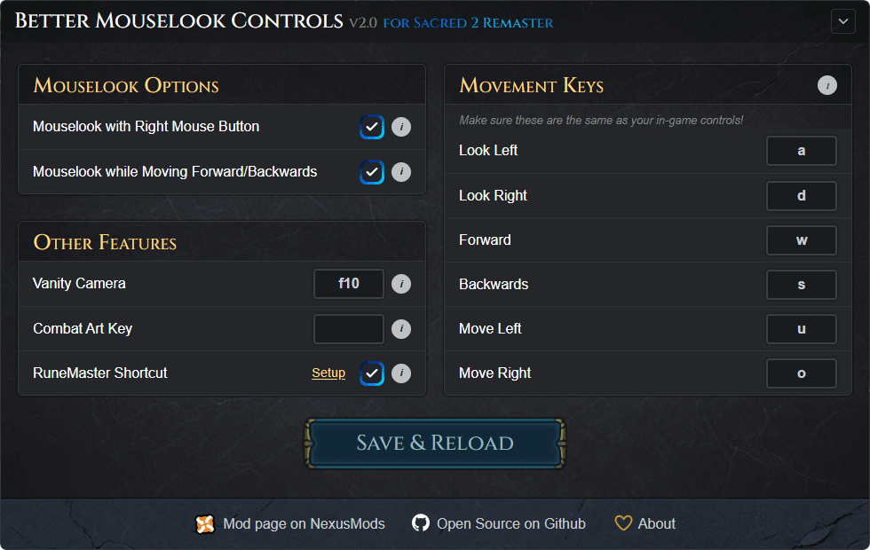

An AutoHotkey v2 script that adds MMO-style mouselook and quality-of-life enhancements, with a user-friendly configurator.

Hold right mouse button to rotate the camera and enable strafe keys. Classic MMO-style controls.
The camera follows your mouse automatically whenever you run forward or backward — easy on the wrists.
Circles around your character when idle, similar to Skyrim. Toggle on/off with a key (default F10) or ESC.
Moves runes from the inventory to the RuneMaster slot with a keypress — no dragging required.
A shortcut to activate combat arts for Classic mouselook users without quickcast.
Your configuration is saved automatically and restored the next time you launch the script.